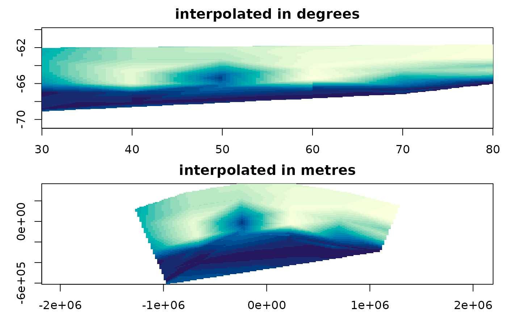

Coordinates, projections, and GDAL
Michael D. Sumner
2026-09-09
Source:vignettes/projection.Rmd
projection.RmdNothing in this package’s interpolation looks at a coordinate
reference system. The arithmetic is planar: triangles, distances,
weights, all computed on the numbers you hand it. A crs
carried in on the input is carried out on the result, untouched, because
it is a label on the answer rather than an input to it.
That is a deliberate choice and it is not the same as saying projection does not matter. It matters a great deal. It just is not the interpolation’s business, and this article is about what it is the business of.
library(guerrilla)
library(reproj)
library(readxl)
bw <- read_excel(system.file("extdata", "BW-Zooplankton_env.xls",
package = "guerrilla", mustWork = TRUE))
lonlat <- as.matrix(bw[, c("Lon", "Lat")])
val <- bw$tempThe same points, in two coordinate systems
The transect runs about 50 degrees of longitude at 65 degrees south, where a degree of longitude is under half the length of a degree of latitude. Project it to a local equal-area and the shape changes:
mid <- c(mean(range(lonlat[, 1])), mean(range(lonlat[, 2])))
laea <- sprintf("+proj=laea +lon_0=%f +lat_0=%f +datum=WGS84", mid[1], mid[2])
xy <- reproj_xy(lonlat, laea, source = "EPSG:4326")
op <- par(mfrow = c(2, 1), mar = c(2, 3, 2, 1))
plot(lonlat, pch = 16, cex = 0.4, asp = 1, main = "longitude and latitude")
plot(xy, pch = 16, cex = 0.4, asp = 1, main = "local equal area, metres")
par(op)Interpolate on each, and the surfaces are not the same surface.
gl <- grid_spec(lonlat, dimension = c(120, 100), crs = "EPSG:4326")
gp <- grid_spec(xy, dimension = c(120, 100), crs = laea)
a <- grid_barycentric(lonlat, val, gl)
b <- grid_barycentric(xy, val, gp)
op <- par(mfrow = c(2, 1), mar = c(2, 3, 2, 1))
plot(a, main = "interpolated in degrees")
plot(b, main = "interpolated in metres")
par(op)To compare them properly, take the cell centres of the first grid, project them, and read the second surface there:
sampled <- rep(NA_real_, grid_ncell(gl))
at <- reproj_xy(grid_xy(gl), laea, source = "EPSG:4326")
cell <- vaster::cell_from_xy(gp$dimension, gp$extent, at)
ok <- !is.na(cell)
sampled[ok] <- b$values[cell[ok]]
both <- !is.na(sampled) & !is.na(a$values)
c(compared = sum(both),
max_difference = max(abs(sampled[both] - a$values[both])),
rms_difference = sqrt(mean((sampled[both] - a$values[both])^2)),
data_range = diff(range(val)))
#> compared max_difference rms_difference data_range
#> 9.341000e+03 5.300803e-01 5.708905e-02 2.552779e+00The two agree at the data points, because both are exact there. In between they differ by up to a fifth of the whole range of the data, from nothing but the choice of coordinates.
They also cover different areas:
c(only_in_degrees = sum(!is.na(a$values) & is.na(sampled)),
only_in_metres = sum(is.na(a$values) & !is.na(sampled)))
#> only_in_degrees only_in_metres
#> 328 1261Triangulation is built out of straight lines and a convex hull, and a straight line in one projection is not a straight line in another. So the triangles are different triangles, the hull is a different hull, and the region the answer covers changes as well as the answer.
None of that is something the interpolation could have decided for you. Which projection is right depends on what the values mean and what you intend to do with the surface, and only you know that. What this package can do is not pretend the question was settled.
GDAL does this too
GDAL’s gdal_grid interpolates scattered data, and it has
been doing it since long before any of this. Four of its algorithms have
a twin here.
g <- grid_spec(lonlat, dimension = c(60, 50), crs = "EPSG:4326")
gdal_linear <- grid_gdal(lonlat, val, g, "linear:radius=0.0")
ours <- grid_barycentric(lonlat, val, g)
identical(is.na(gdal_linear$values), is.na(ours$values))
#> [1] TRUE
max(abs(gdal_linear$values - ours$values), na.rm = TRUE)
#> [1] 7.160939e-15Agreement to floating point, between GDAL’s C++ and this package’s call into Qhull. And for nearest neighbour, agreement exactly:
identical(grid_gdal(lonlat, val, g, "nearest")$values,
grid_voronoi(lonlat, val, g)$values)
#> [1] TRUEThat one is worth a second look, because the two arrive by different
routes. GDAL searches for the closest point; grid_voronoi()
builds the Voronoi tessellation with GEOS and asks which tile each cell
falls in. Same answer, to the last bit, three thousand times.
Inverse distance is the same story with a little more room in it:
max(abs(grid_gdal(lonlat, val, g, "invdist:power=2.0:smoothing=0.0")$values -
grid_idw(lonlat, val, g)$values))
#> [1] 0.0001623855Four independent implementations of linear interpolation over a
Delaunay triangulation now agree on this data: this package’s
tsearch() path, its readable R path,
interp::interp(), and GDAL. That is worth more than any one
of them being convincing on its own.
Two GDAL defaults to know about
gdal_grid’s linear algorithm does not stop
at the convex hull unless you tell it to. The default
radius is -1, an infinite search, so a cell in no triangle
silently takes the value of the nearest point:
c(default = sum(is.na(grid_gdal(lonlat, val, g)$values)),
radius_zero = sum(is.na(grid_gdal(lonlat, val, g, "linear:radius=0.0")$values)))
#> default radius_zero
#> 0 582And cells it cannot estimate are filled with 0, with nothing recorded
to say that 0 is not a measurement. grid_gdal() sets
nodata=nan for you unless you set one yourself, which is
why the numbers above come back as NA.
Where gdal_grid lives
gdal_grid is reachable from R only through
sf::gdal_utils(). wraps warp,
translate and rasterize but not
GDALGrid, and the unified gdal command line
introduced in GDAL 3.11 has no grid subcommand for it to wrap. So
grid_gdal() needs , and that is the only reason it
does.
Thin plate splines, in the other direction
grid_tps() fits a spline to
(x, y) -> value. GDAL’s -tps warping fits a
spline to (pixel, line) -> (x, y). Same estimator,
applied to coordinates instead of measurements: georeferencing an image
from ground control points is interpolation, and it is the interpolation
in this package.
The claim is checkable. Build an image whose two bands hold its own column and row index, so that after warping we can read off which input pixel every output cell came from:
library(gdalraster)
nx <- 120L; ny <- 100L
src <- tempfile(fileext = ".tif")
create(format = "GTiff", dst_filename = src, xsize = nx, ysize = ny,
nbands = 2L, dataType = "Float64")
ds <- new(GDALRaster, src, read_only = FALSE)
ds$write(band = 1L, xoff = 0L, yoff = 0L, xsize = nx, ysize = ny,
rasterData = as.numeric(rep(seq_len(nx), times = ny)))
ds$write(band = 2L, xoff = 0L, yoff = 0L, xsize = nx, ysize = ny,
rasterData = as.numeric(rep(seq_len(ny), each = nx)))
ds$close()Give it sixteen ground control points, mapping a lattice of pixels
through the same longlat to equal-area transform used above. That
mapping is smooth and it is not affine, which is exactly the case
-tps exists for.
gp <- as.matrix(expand.grid(px = seq(1, nx, length.out = 4),
py = seq(1, ny, length.out = 4)))
lon <- 30 + (gp[, "px"] - 1) / (nx - 1) * 50
lat <- -69 + (gp[, "py"] - 1) / (ny - 1) * 8
mapxy <- reproj_xy(cbind(lon, lat), laea, source = "EPSG:4326")
## GDAL counts pixel and line from the top left CORNER of the image, so the
## centre of the first pixel is at 0.5, not at 1. Our column index is 1-based
## and names the pixel itself. That half pixel is the oldest bug in
## georeferencing and it is worth being deliberate about.
gcp <- as.vector(rbind("-gcp",
format(gp[, "px"] - 0.5, digits = 15),
format(gp[, "py"] - 0.5, digits = 15),
format(mapxy[, 1], digits = 15),
format(mapxy[, 2], digits = 15)))
withgcp <- tempfile(fileext = ".tif")
warped <- tempfile(fileext = ".tif")
translate(src, withgcp, cl_arg = c(gcp, "-a_srs", laea), quiet = TRUE)
warp(withgcp, warped, t_srs = laea, cl_arg = c("-tps", "-r", "near"),
quiet = TRUE)Now fit the same thing with , from the same sixteen points, and compare where GDAL and R each think a given map position came from.
library(fields)
fx <- Tps(mapxy, gp[, "px"], lambda = 0) ## lambda = 0 interpolates exactly,
fy <- Tps(mapxy, gp[, "py"], lambda = 0) ## which is what GDAL's tps does
out <- new(GDALRaster, warped)
ox <- out$getRasterXSize(); oy <- out$getRasterYSize()
gt <- out$getGeoTransform()
col_from <- out$read(band = 1L, xoff = 0L, yoff = 0L, xsize = ox, ysize = oy,
out_xsize = ox, out_ysize = oy)
row_from <- out$read(band = 2L, xoff = 0L, yoff = 0L, xsize = ox, ysize = oy,
out_xsize = ox, out_ysize = oy)
out$close()
oc <- rep(seq_len(ox), times = oy) - 0.5
orw <- rep(seq_len(oy), each = ox) - 0.5
mx <- gt[1] + oc * gt[2] + orw * gt[3]
my <- gt[4] + oc * gt[5] + orw * gt[6]
filled <- is.finite(col_from) & col_from > 0
dcol <- predict(fx, cbind(mx[filled], my[filled])) - col_from[filled]
drow <- predict(fy, cbind(mx[filled], my[filled])) - row_from[filled]
c(cells = sum(filled),
mean_column_offset = mean(dcol), sd_column = sd(dcol),
mean_row_offset = mean(drow), sd_row = sd(drow))#> cells mean_column_offset sd_column
#> 8631.000000 0.001064 0.383321
#> mean_row_offset sd_row
#> 0.026572 0.431023A mean offset of one thousandth of a pixel, over eight thousand cells. The remaining scatter of about four tenths of a pixel is the nearest-neighbour resampling: the warped image records a whole pixel index, and the spline predicts a fractional one. It does not shrink if you make the output finer, which is how you know it is the rounding and not the fit.
So GDAL’s -tps and fields::Tps() are the
same estimator. grid_tps() and image georeferencing are the
same operation pointed at different quantities, and if you understand
one you understand the other.
The chunks above are not run when this vignette is built, because they write files. Run them yourself; they work.
A note on coordinate magnitude
One thing did have to change to make projected coordinates work at
all. geometry::tsearch() builds a quadtree over the points,
and on some coordinate ranges the insertion fails outright:
big <- cbind((lonlat[, 1] - mid[1]) * 1000, (lonlat[, 2] - mid[2]) * 1000)
tri <- geometry::delaunayn(big)
at <- grid_xy(grid_spec(big, dimension = c(50, 40)))
geometry::tsearch(big[, 1], big[, 2], tri, at[, 1], at[, 2], bary = TRUE)
#> Error:
#> ! Failed to insert point into QuadTree.
#> Please post input to tsearch (or tsearchn at
#> https://github.com/davidcsterratt/geometry/issues
#> or email the maintainer.The same points scaled by 10000 instead of 1000 are fine, so it is
not a threshold to steer around. The fix is to remove the variable:
barycentric weights do not change when a triangle and the point inside
it are moved and scaled together, so grid_barycentric()
centres and scales the coordinates before the search and the answer is
unaffected.
head(grid_barycentric(big, val, grid_spec(big, dimension = c(50, 40)))$values, 3)
#> [1] NA NA NAThis is the kind of thing that only shows up when you leave degrees behind, which is a reason to try your work in a projection even when you did not need one.